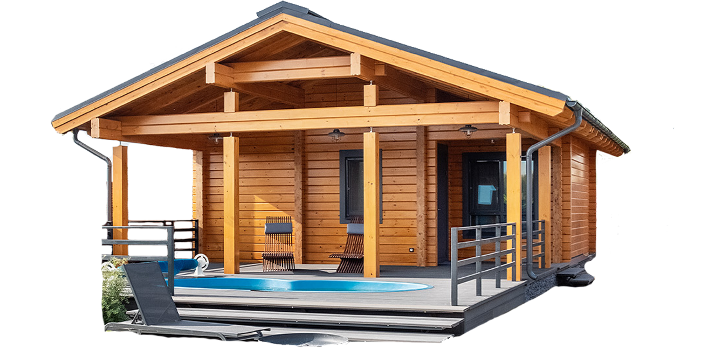
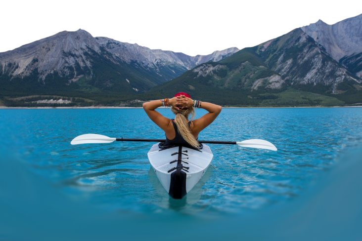
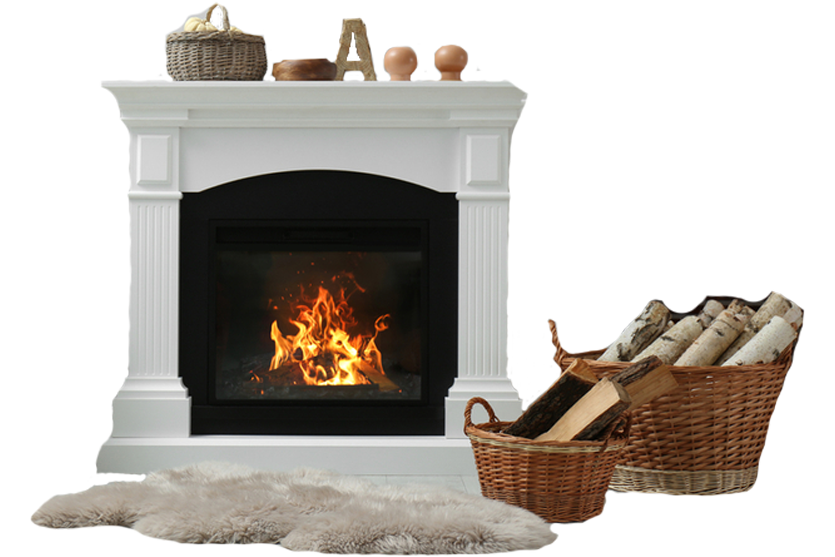
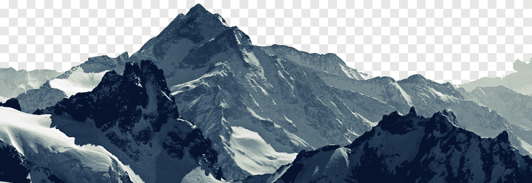

Бани, спа и бассейны
Санаторий располагает спа-комплексом с термальными бассейнами, саунами, банями и массажными кабинетами, где можно расслабиться после активного дня
Горные массивы со своей экосистемой

Активный отдых на природе
Уютные каминные зоны
В холлах и номерах установлены камины, создающие теплую атмосферу для вечернего отдыха после горных приключений.
«Горные легенды»: Санаторий, где небо касается земли
Высоко в сердце Заоблачных хребтов, где облака плетут кружева вокруг вершин, а воздух наполнен ароматом альпийских трав, стоит отель «Звездная Вершина». Его история началась столетие назад, когда смелый геолог и мечтатель Эдуард Валлин заблудился в этих горах во время экспедиции. Сбившись с пути, он нашел ущелье, где даже в лютый мороз бил теплый источник, а вокруг росли вековые кедры, будто охраняемые духами гор. Эдуард решил: это место должно стать приютом для тех, кто ищет не просто отдых, а диалог с природой. Так появился первый камень в фундаменте будущего отеля, построенного вручную из местного камня и дерева, чтобы слиться с пейзажем, а не нарушить его.
